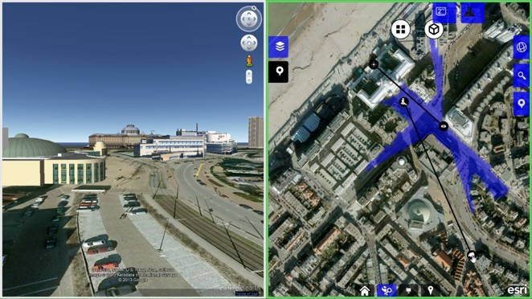

The Common Sense Framework
The world at your fingertips
Introduction
- Goal
“Simple and natural disclosure of information and sensor data to support decision making” - What we have
“A collection of reusable tools and components for interaction with information, multi-site collaboration and analysis.”
Popular Devices
Safety & Security Applications
Innovative Urban Planning
- Customer: City of The Hague
- Goal: Enable domain experts to quickly and collaboratively create a master and safety plan for the city.
- Experts estimate impact of plans and measures on the city collaboratively based on:
- Quality of life
- Economics
- Safety & Security
- Costs
- Combine selected plans & measures to form initial urban development plans
- Domain experts collaboratively specify the effects of a potential plan on the area.
- Drag plans (shown in the wheel) to a cluster on the map.
- The dialog box instantly shows the effect on the criteria based on the expert model.
iTable


- Customer: National Police (DBB = Service for Protecting People)
- Goal: Increase the quality and effectiveness of security briefings.
- Show location in Google Earth or StreetView
- Analyse field-of-view at position
- Mark (and collaboratively share) map with points of interest
Combine top view with 3D view in Google Earth

Access traffic cameras

Combine 3D information with CBS statistics

Augmented Reality for 3D Situational Awareness
By adding AR markers to the map, we can also inspect the situation in 3D
- Left) Real-time flight tracker service
- Right) Amsterdam arena


TouchMii - Combining operations & simulation


- Customer: Command and Control (C2) birdtable, Ministry of Defence
- Goal: Increase the quality of strategic and tactical decisions
- Features:
Course of Action support: Weigh alternatives

Situational Awareness in VBS2


Crisis Management Training Suite

Marvel
- Customer: Ministery of Defence, Olympics, Health...
- Goal: Develop Expert Models together with clients to estimate the effect of decisions.
- Based on casual loop diagrams, determine the strength of relations, sign and time delay between different domain concepts to determine the most appropriate course of action.
UrbanFlood
- Customer: Framework Program 7
- Goal: Develop a Surface platform for sensor management during
daily operations but also during flooding.


The Reality Check: Real-time Evacuation Model
- Increased situation awareness during a crisis
- Uses ThePopulator™ for population data
SPARQS (Sensor Planning, Allocation of Resources and Quality of Service)
- Customer: STARS project
- Goal: a tool for sensor planning: drag-’n-drop sensors, configure them, analyse field of view. Is used to establish roadmap using CDAG (Concept Development Assessment Game): determine most important sensor features.
- Using Resource Allocation Algorithms (Matlab)


TnoPresenter
- Customer: TNO Market & Communications dept.
- Goal: present TNO’s knowledge, product and project portfolio in an interactive way.
- A multimedia presentation tool to interactively show content.
ieNat
- Provide a virtual infrastructure to large scale electric grids:
- Enables Energy Services by collecting and analysing data from the physical Infrastructure
- Matlab back-end with load flow solver, State estimation, Data aggregation & sensor placement algorithms
EIT Waternet
- Full Water Cycle demonstration
- 3D animations for explanations
- Real-life data for investigations (vessel tracking, dike monitoring, waterway sensors, bridges, sewers, etc.)
CareTool
- Customer: Ministry of Health (VWS)
- Goal: Gain insight in the position of health care facilities and health regions
Commons Sense - for Defence
- Customer: Ministry of Defence
-
Common Sense is an integrated C4I demonstrator consisting of:
- a smartphone application for dismounted soldiers
- a command post application on a multi-touch table, tablet or smartphone
- Features include blue force tracking, drawing, changing and sending waypoints, marking areas or points of interest, (push-to-talk) speech, voice messages, chat, sensing photos, event logging, task lists and context-dependent information transfer

Logistic Planning
- Customer: Commercial logistic company
- Goal: Develop an intuitive dashboard for planning ship allocation.
SafeMe
- Tool to compare the risk reducing effects of safety measures.
- Uses open source data (CBS, BAG, risicokaart.nl) with different computational models to compute effects of risk reducing measures.
Maritime Situational Awareness
- Customer: Ministery of Defence (Royal Navy)
- Goal: Find the best course of action to catch pirates, smugglers & illegal fishers.
The Missing Link
- Customer: Ministery of Defence
- Goal: Web application aimed to decrease the gap between operational needs (scenarios) and potential solutions (ideas of systems)
Multi-Purpose Analysis Features
An overview of several multi-purpose analysis tools.
Extract situational information from databases

Filter information by location

Role-based Dashboards Views
Technical background

Scroll down for more information
System Architecture

Basic Building blocks
- Map component (ESRI)
- Base layers: Google, Bing, Yahoo, ESRI, OSM....
- WMS layers: Buienradar, BAG, PDOK, Panoramio…
- PostGIS query layers
- Favorites and Dashboards
To return to locations easily, including selected layers. - Modularity
Every application is modular. Using a plugin structure, new tools, map layers, models etc. can be added. - Multi-touch interaction
Support for (multi-)touch as well as mouse interaction on Windows 7 & 8.

Basic Building blocks 2
- Points of interest layers:
Create your own layer definitions in XML - Time-based events
Similar to timeline.js, visualise events on the timeline. - Presentation of content
Show media in a folder structure, push to SecondScreen,
share with QR code.
Can be linked to a PoI, e.g. floor or security plans of a hotel.

Interfacing with external applications
- Interact with other apps
E.g. CommonSense framework, IMB bus, Web Service, Excel...- VBS2 (Bohemia, Virtual Battle Space 2)
- Havok game engine
- Google Earth (SecondScreen)
- Open Scene Graph (EVE))
- Urban Strategy services (air quality, trafic, noise...)
- Trackers, Information Fusion, Planners etc...
- Plugins control
- Turn plugins on/off.
- Dynamically load new plugins.
- Start other programs.

Analysis tools
- Timeline & player
Interactive timeline interface for navigating through time.
Sensor data is updated based on focus time. - Graphs
Visualisation of sensor data using interactive graphs
that can be annotated. - Map tools
Drawing and annotating on the map, (reverse) geo-referencing,
SQL queries, determining distances, line-of-sight, routing


Analysis tools 2
- Multi-Criteria Analysis, easy filtering and highlighting
A PoI can be filtered, colored or styled based on its properties. - Intelligent Points of Interest
A PoI can be enhanced with its own code, e.g.
to draw a zone, show a field-of-view, add an animation... - Extensive search capabilities
Query Google Places, DBPedia, BAG, and more,
and add the results to the map
Collaboration and Co-design
- Real-time Remote Viewing
See who is online, share your view, map and timeline synchronization, sharing of photo’s, video’s, map layers. - Remote Editing
Share and annotate collaboratively. - Working together
Chat with co-workers, teleconferencing, email, chat (voxer), twitter...
Interface with models and simulations
- Existing models
Traffic management, Noise management, air quality, quality of life, ground water, durability, external safety, costs, impact of explosions, Building Information Models,
Field of View - Existing simulations
Marine traffic, weather and wind, flooding, evacuation, oil spills,
traffic jams & intelligent traffic systems


Coupling with external devices
- SecondScreen
Google Earth, StreetView, photo’s, timeline, video, websites, presentations - SmartPhone
Exchange live GPS position (blue force tracking), media,
live streaming of camera image - Gestures & voice interaction
Using Kinect to control applications
via voice or gesture.
And many more...
- CCTV integration
- Live TV streams
- Interfacing with simulation standards such as DIS and HLA
- Active tangibles
- Social Media integration
- VNC coupling
- Conference call / SMS


Want to know more...?
Contact us at tno.nl
- Arnoud de Jong, MA (arnoud dot dejong at tno dot nl)
Specialisation: SmartPhones and Natural User Interfaces - Jeroen Broekhuijsen, MA (jeroen dot broekhuijsen at tno dot nl)
Specialisation: Water and energy domain - Erik Vullings, PhD, MSc (erik dot vullings at tno dot nl, +31-6-302 45 272)
Specialisation: Modelling and Simulations